1. Thanks
Our thanks go to the many people who have contributed to this discussion over many years. Hans Boehm, Soham Chakraborty, David Goldblatt, Chung-Kil Hur, Alan Jeffrey, Ori Lahav, Paul McKenney, Scott Owens, Anouk Paradis, Marco Paviotti, William Pugh, James Riely, Jaroslav Ševčík, Ben Simner, Viktor Vafeiadis, Daniel Wright, and others!
2. Introduction
This paper is a step in integrating semantic dependency (sdep) into the C++ standard in order to fix the longstanding thin-air problem. It explains sdep with examples and then poses questions to SG1 members on the finer details of C++ compiler behaviour.
sdep is intended to capture a minimum set of ordering implicit in the data, control and address dependencies of a program -- sdep is made up of only the dependencies that must be preserved by an optimising C++ compiler. [P1780] (Kona 2022) provided standards text introducing sdep as an implementation-defined relation, restricted by a technical report, auxilliary to the standard. Adding sdep is a small change to the standard that fixes a deep problem, avoiding a rewrite of the concurrency specification. We hope this paper will lead to the auxilliary technical report by defining cases where there must be sdep, and the compiler may not optimse, and cases where the compiler must be free to optimise, so there can be no sdep.
We use small example programs with defined outcomes called litmus tests to introduce sdep, and then to discuss the corner cases where the C++ standard should limit the compiler’s optimiser to preseve program order. By convention, locations in litmus tests are atomic and memory accesses are
Target architectures like ARM and POWER allow relaxed concurrent behaviours, that cannot be explained by any sequential scheduling of the memory events in the program. The following litmus test, called Load Buffering (LB), can produce the outcome
2.1. Load buffering
// Init: x : = 0 ; y : = 0 ; // Thread 0: r1 : = x ; y : = 1 // Thread 1: r2 : = y ; x : = 1
The concurrent behaviour of a program is defined by the C++ memory model as a set of executions -- graphs of the memory events performed in one path of the program’s control flow. The memory reads, writes and fences make up the nodes, the black edges represent sequenced before, sb, and the red edges represent reads from, rf, indicating which write each read is reading from. The memory model forbids executions that have the wrong kind of cycles in these relations, but because we must allow the relaxed outcome in the LB test, it cannot forbid executions containing a cycle in sb and rf as below.
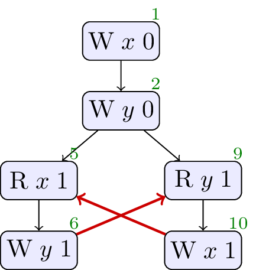
There is a flaw in the existing C++ standard where, in an attempt to allow aggressive compiler optimisation, the language definition goes too far, allowing programs to produce values out of thin air. The test below, LB+datas, is a variant of LB where the values written are taken from the values read on each thread.
2.2. Load buffering with data dependencies
// Init: x : = 0 ; y : = 0 ; // Thread 0: r1 : = x ; y : = r1 // Thread 1: r2 : = y ; x : = r2
The standard allows the outcomes
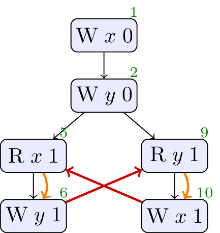
The curved arrows in the executions are dependency edges they reflect the fact that the values written by the writes are data dependent on the values read. In the previous test, LB, there were no dependency edges because concrete values were written making the writes independent. By forbidding cycles in dependency and rf, we could forbid the relaxed outcome here, but keep the outcome in the LB test, just as we need to. Note that this choice restricts the compiler: the specification requires the compiler to keep the accesses in order in LB+datas. That is not an onerous resrtiction: we do not expect the compiler to optimise here.
The next test demonstrates that conditional statements can create dependencies too.
2.3. Load buffering with control dependency
// Init: x : = 0 ; y : = 0 ; // Thread 0: r1 : = x ; if ( r1 == 1 ) { y : = r1 } // Thread 1: r2 : = y ; if ( r2 == 1 ) { x : = 1 }
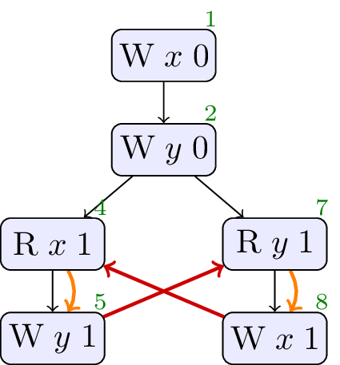
Once again, the execution where
It is not enough to consider only the syntactic structure of the program when calculating dependencies. In the following test, a value loaded from memory is used in a conditional, but because a write of value
2.4. Load buffering with false-dependency
// Init: x : = 0 ; y : = 0 ; // Thread 0: r1 : = x ; if ( r1 == 1 ) { y : = r1 } // Thread 1: r2 : = y ; if ( r2 == 1 ) { x : = 1 } else { x : = 1 }
The standard must allow the optimisation. Syntactic dependency, sdep, is a relation that captures just the dependencies that should not be optimised away. In particular, there is no sdep from the load of
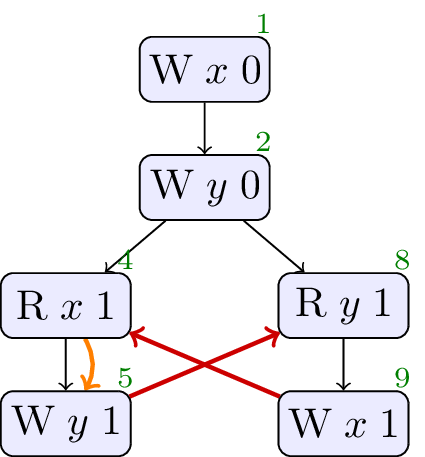
2.5. Java Hotspot
While the audience for this paper is SG1, it is useful to consider other programming languages that have grappled with similar problems. Java has a complex memory consistency model, and they too have had to consider what the meaning of dependency is in their programming language. The following program [Sevcik] is an example where the Java concurrency specification fails to allow all of Hotspot’s optimisations.
// Init: x : = 0 ; y : = 0 ; // Thread 0: r1 : = x ; y : = r1 // Thread 1: r2 : = y ; if ( r2 == 1 ) { r3 : = y ; x : = r3 } else { x : = 1 }
Hotspot will optimise Thread 1 as follows: the load of
Rather than describe the list of optisations that is performed, sdep is more abstract, describing the dependencies left in each excecution after optimisation. The optimisations described above impact the execution below, where both loads of
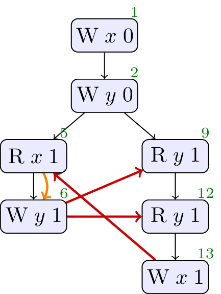
2.6. Java Causality Test Case 18
There is an established set of litmus tests for Java that analyses the effects of dependencies on the memory consistency model, called the Java Causality Tests. Test case 18 highlights the impact of global value-range analysis.
// Init: x : = 0 ; y : = 0 ; // Thread 0: r3 : = x ; if ( r3 == 0 ) { x : = 42 }; r1 : = x ; y : = r1 // Thread 1: r2 : = y ; x : = r2
A global analysis could determine that the only writes to
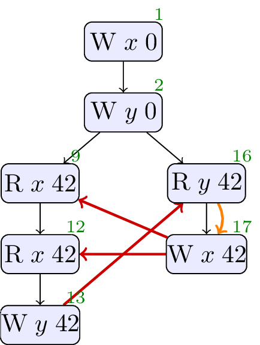
In the execution above, the absence of sdep on Thread 0 means that there is no cycle in sdep and rf, and the outcome where
We believe this optimisation should be allowed. Does SG1 agree?
These introductory tests show examples where sdep should, and should not, be present, and higlight the existence of cases where we need to ask to be sure. There are a selection of tests where this choice is less clear-cut and we are interested in SG1’s opinion, we will discuss these next.
3. Controversial Tests
3.1. Goldblatt alignment
First, we will look at an example from previous discussions with SG1 committee members when looking at [P1780]. David Goldblatt pointed out that the compiler may enforce additional constraints on the values used in a program, e.g. aligning objects, and then optimisation may take advantage of these constraints, as in the follwoing example.
struct S { float vectorData [ 8 ]; }; S s0 ; S s1 ; S s2 ; atomic < S *> x { & s0 }; atomic < S *> y { & s1 }; S * r1 ; S * r2 ; void t1 () { r1 = x . load ( rlx ); if (( uintptr_t ) r1 % 32 == 0 ) { y . store ( & s2 ); } } void t2 () { r2 = y . load ( rlx ); if (( uintptr_t ) r2 % 32 == 0 ) { x . store ( & s2 ); } }
Here
We believe compilers do create constraints on values like this, and then optimise in the context of these choices, so there can be no sdep. Does the committee agree?
3.2. RFUB
Continuing with examples from SG1 members, in [P1217R1] Hans Boehm has discussed programs that appear to read from untaken branches.
// Init: x : = 0 ; y : = 0 ; // Thread 0: r1 : = x ; y : = r1 // Thread 1: z : = 0 ; r2 : = y ; if ( ¬r2 == 42 ) { z : = 1 ; r2 : = 42 }; x : = r2 ; r3 : = z
In this program, for similar reasons to the Java Hotspot example, a compiler could reason that, no matter what,
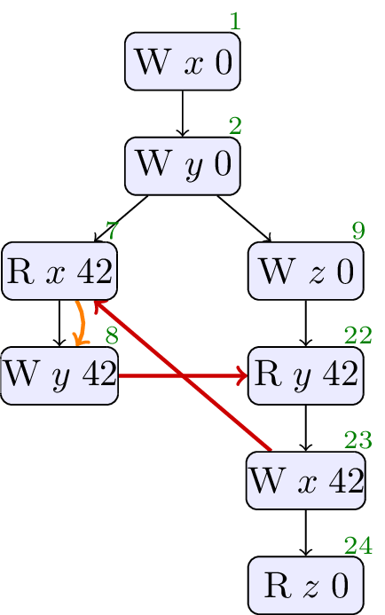
Does allowing this execution, and chosing this set of sdep edges, match the intention of SG1?
3.3. OOTA4
This example has an execution that is contentious among concurrent models of dependency [PwT]. The program has apparent data dependencies from
// Init: x : = 0 ; y : = 0 ; z : = 0 ; b : = 0 ; // Thread 0: r2 : = y ; r3 : = b ; if ( ¬r3 == 0 ) { x : = r2 ; z : = r2 } else { x : = 1 } // Thread 1: b : = 1 // Thread 2: r1 : = x ; y : = r1
In the following execution, the rf edges over
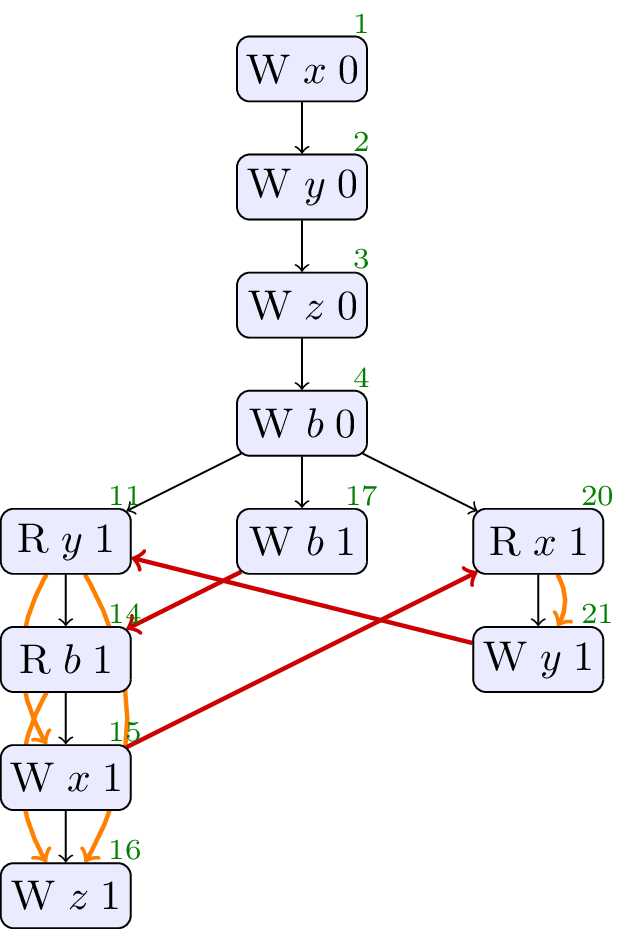
The explanation of why this might be reasonable is rather different to the workings of the C++ concurrency model. It hinges on changing the write that the read on Thread 2 gets its value from, from the
We do not have a sequence of optimisations that leads to this behaviour, we believe this execution should be forbidden, and the sdep edges should be as shown above. Does SG1 agree?
3.4. CohCYC
This example also has an execution that is contentious among concurrent models of dependency [WeakestMO]. The program has apparent control dependencies from
// Init: x : = 0 ; y : = 0 ; // Thread 0: x : = 2 ; r1 : = x ; if ( ¬r1 == 2 ) { y : = 1 } // Thread 1: x : = 1 ; r2 : = x ; r3 : = y ; if ( ¬r3 == 0 ) { x : = 3 }
In the execution of concern, Thread 1 reads the value
We do not have a sequence of optimisations that leads to this behaviour, we believe this execution should be forbidden, and the sdep edges should be as shown above. Does SG1 agree?
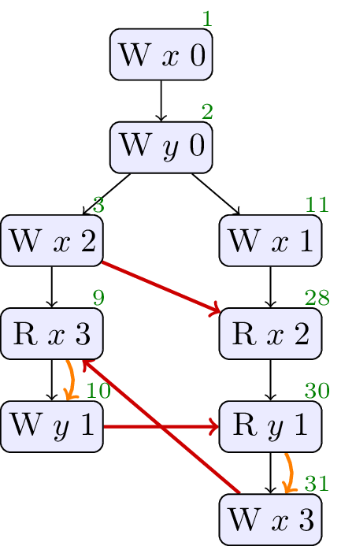
3.5. Freeze Example
The most tricky example program and optimisation sequence we have is from Ori Lahav and Chung-Kil Hur.
// Init: k : = 0 ; x : = 0 ; y : = 0 ; z : = 0 ; boom : = 0 ; // Thread 0: r1 : = z ; x : = r1 // Thread 1: r2 : = k . load ( acq ); if ( r2 == 42 ) { r3 : = x ; if ( r3 == 1 ) { z : = r3 ; boom : = 1 } else { r4 : = y . load ( na ); z : = r4 } } // Thread 2: y . store ( 1 , na , normal ); k . store ( 42 , rel , normal )
In this test, we could reason that an execution that stores
The optimisation sequence hinges on the use of a new
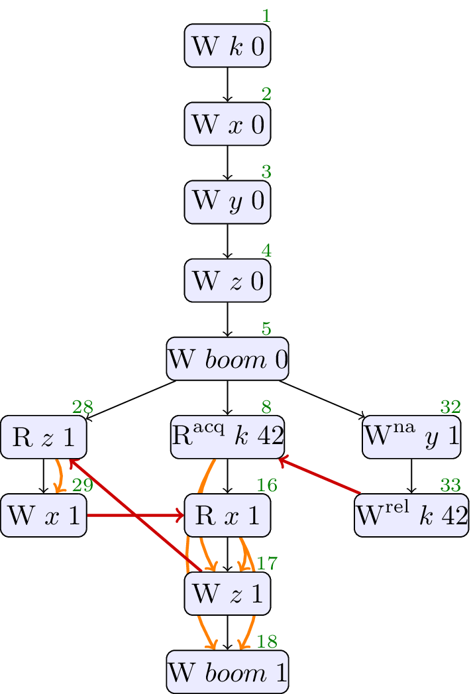
The cycle in sdep and rf that forbids this outcome is over events
The series of optimisations that might remove that sdep edge and permit this behaviour relies on global analysis. The optimisations are all on Thread 1, and we repeat the transformed program after each step. To start with, Thread 1 is as follows.
// Thread 1: r2 : = k . load ( acq ); if ( r2 == 42 ) { r3 : = x ; if ( r3 == 1 ) { z : = r3 ; boom : = 1 } else { r4 : = y . load ( na ); z : = r4 } }
Load introduction
We introduce a non-atomic load of
// Thread 1: r2 : = k . load ( acq ); if ( r2 == 42 ) { r5 : = y . load ( na ); r3 : = x ; if ( r3 == 1 ) { z : = r3 ; boom : = 1 } else { r4 : = y . load ( na ); z : = r4 } }
Load forwarding
We replace the non-atomic load of
// Thread 1: r2 : = k . load ( acq ); if ( r2 == 42 ) { r5 : = y . load ( na ); r3 : = x ; if ( r3 == 1 ) { z : = r3 ; boom : = 1 } else { r4 : = r5 ; // load forward z : = r4 } }
LLVM trace preserving transformation
We
// Thread 1: r2 : = k . load ( acq ); if ( r2 == 42 ) { r5 : = y . load ( na ); if ( freeze ( r5 == 1 )) { // freeze r3 : = x ; if ( r3 == 1 ) { z : = r3 ; boom : = 1 } else { r4 : = r5 ; z : = r4 } } else { /* ... */ } }
LLVM trace preserving transformation
We simplify terms using the predicates on branches.
// Thread 1: r2 : = k . load ( acq ); if ( r2 == 42 ) { r5 : = y . load ( na ); if ( freeze ( c == 1 )) { r3 : = x ; if ( r3 == 1 ) { z : = 1 ; // simplification r3 == 1 boom : = 1 } else { r4 : = 1 ; // simplification using freeze(r5==1) z : = r4 } } else { /* ... */ } }
LLVM trace preserving transformation
Here we constant propagate the register value into the store on
// Thread 1: r2 : = k . load ( acq ); if ( r2 == 42 ) { r5 : = y . load ( na ); if ( freeze ( c == 1 )) { r3 : = x ; z : = 1 ; // hoisted if ( r3 == 1 ) { boom : = 1 } else { } } else { /* ... */ } }
There is now no dependency between
Note that this execution is race-free, the non-atomic store is happens-before the load, thanks to the
Is SG1 happy with this set of transformations? Should this weak execution be allowed?
4. sdep in Java Causality Tests
To contextualise sdep with the Java Causality Tests, we print the tests, the interesting execution, and our conclusion on acyclicity of sdep and rf. See [JCT].
4.1. JCTC1
// Init: x : = 0 ; y : = 0 ; // Thread 0: r1 : = x ; if ( r1 >= 0 ) { y : = 1 } // Thread 1: r2 : = y ; x : = r2
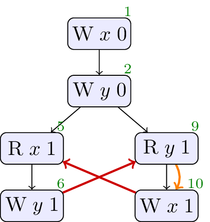
Allowed, no cycle. A compiler can observe that
4.2. JCTC2
// Init: x : = 0 ; y : = 0 ; // Thread 0: r1 : = x ; r2 : = x ; if ( r1 == r2 ) { y : = 1 } // Thread 1: r3 : = y ; x : = r3
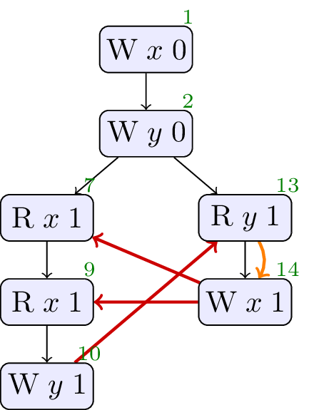
Allowed, no cycle. A compiler can assert that two relaxed loads to the same location will yield the same value.
4.3. JCTC3
// Init: x : = 0 ; y : = 0 ; // Thread 0: x : = 2 // Thread 1: r1 : = x ; r2 : = x ; if ( r1 == r2 ) { y : = 1 } // Thread 2: r3 : = y ; x : = r3
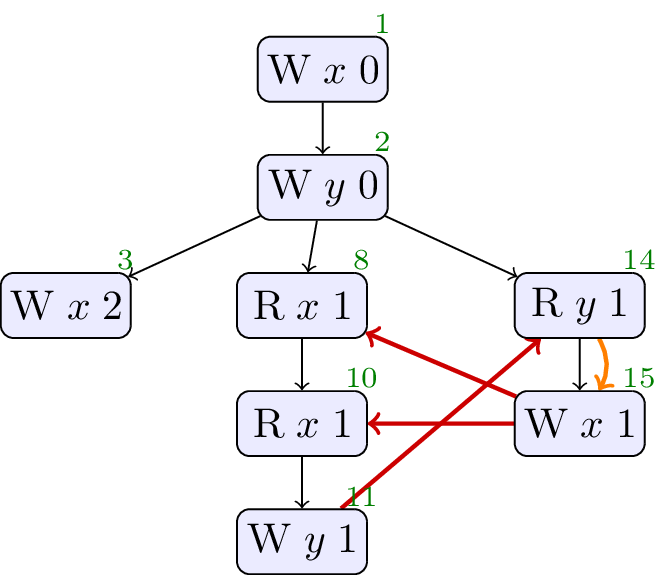
Allowed, no cycle. Similar to above.
4.4. JCTC4
// Init: x : = 0 ; y : = 0 ; // Thread 0: r1 : = x ; y : = r1 // Thread 1: r2 : = y ; x : = r2
Forbidden, cycle in sdep ∪ rf. No values from thin air.
4.5. JCTC5
// Init: x : = 0 ; y : = 0 ; z : = 0 ; // Thread 0: z : = 1 // Thread 1: r3 : = z ; x : = r3 // Thread 2: r2 : = y ; x : = r2 // Thread 3: r1 : = x ; y : = r1
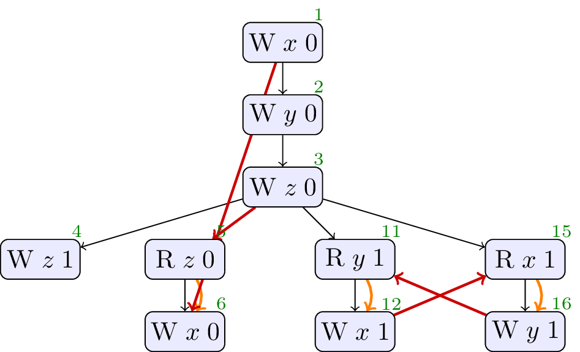
Forbidden, cycle in sdep ∪ rf. No values from thin air.
4.6. JCTC6
// Init: A : = 0 ; B : = 0 ; // Thread 0: r1 : = A ; if ( r1 == 1 ) { B : = 1 } // Thread 1: r2 : = B ; if ( r2 == 1 ) { A : = 1 }; if ( r2 == 0 ) { A : = 1 }
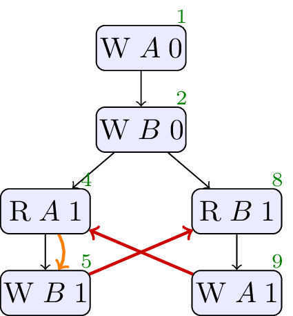
Allowed, no cycle. A compiler can observe that the
4.7. JCTC7
// Init: x : = 0 ; y : = 0 ; z : = 0 ; // Thread 0: r1 : = z ; r2 : = x ; y : = r2 // Thread 1: r3 : = y ; z : = r3 ; x : = 1
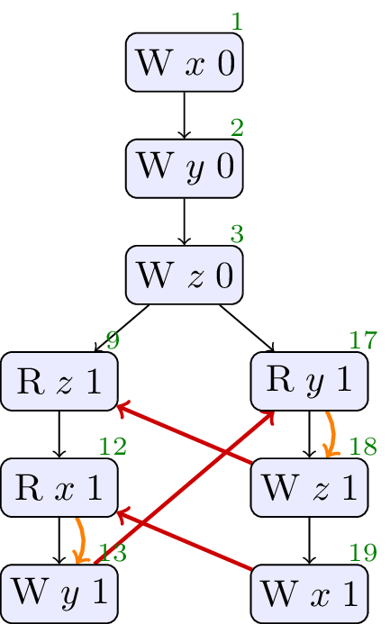
Allowed, no cycle. Hardware and compiler reordering makes this observable.
4.8. JCTC8
// Init: x : = 0 ; y : = 0 ; // Thread 0: r1 : = x ; r2 : = ( 1 + ( r1 * r1 - r1 )); y : = r2 // Thread 1: r3 : = y ; x : = r3
Allowed, no cycle.
Interthread analysis could determine that x and y are always either 0 or 1, and thus determine that r2 is always 1. Once this determination is made, the write of 1 to y could be moved early in thread 1.
4.9. JCTC9
// Init: x : = 0 ; y : = 0 ; // Thread 0: x : = 2 // Thread 1: r1 : = x ; y : = ( 1 + ( r1 * r1 - r1 )) // Thread 2: r3 : = y ; x : = r3
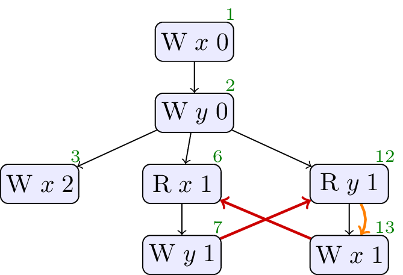
Allowed, no cycle.
Allowed. Similar to test case 8, except that the x is not always 0 or 1. However, a compiler might determine that the read of x by thread 2 will never see the write by thread 3 (perhaps because thread 3 will be scheduled after thread 1). Thus, the compiler can determine that r1 will always be 0 or 1.
4.10. JCTC10
// Init: x : = 0 ; y : = 0 ; z : = 0 ; // Thread 0: r3 : = z ; if ( r3 == 1 ) { x : = 1 } // Thread 1: r2 : = y ; if ( r2 == 1 ) { x : = 1 } // Thread 2: z : = 1 // Thread 3: r1 : = x ; if ( r1 == 1 ) { y : = 1 }
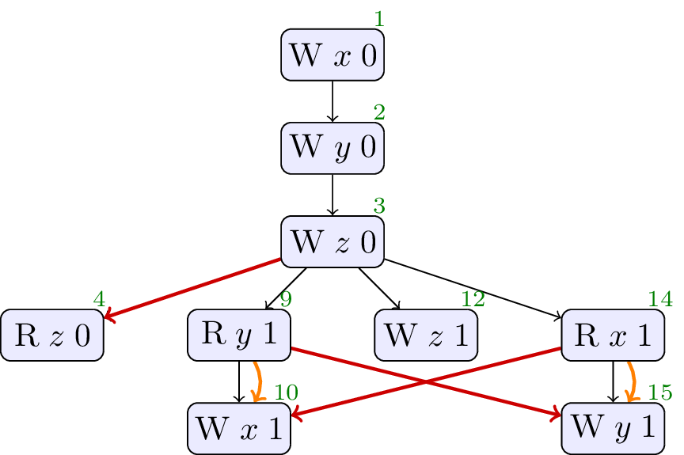
Forbidden, cycle in sdep ∪ rf. No values from thin air.
4.11. JCTC11
// Init: w : = 0 ; x : = 0 ; y : = 0 ; z : = 0 ; // Thread 0: r1 : = z ; w : = r1 ; r2 : = x ; y : = r2 // Thread 1: r4 : = w ; r3 : = y ; z : = r3 ; x : = 1
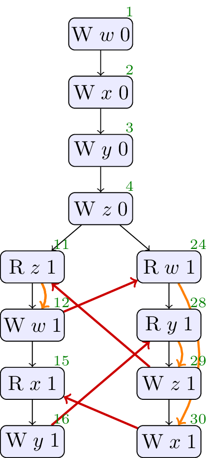
Allowed, no cycle. Observable through compiler and hardare re-ordering.
4.12. JCTC12
// Init: x : = 0 ; y : = 0 ; a0 : = 1 ; a1 : = 2 ; // Thread 0: r1 : = x ; if ( r1 == 0 ) { a0 : = 0 } else { if ( r1 == 1 ) { a1 : = 0 } }; r2 : = a0 ; y : = r2 // Thread 1: r3 : = y ; x : = r3
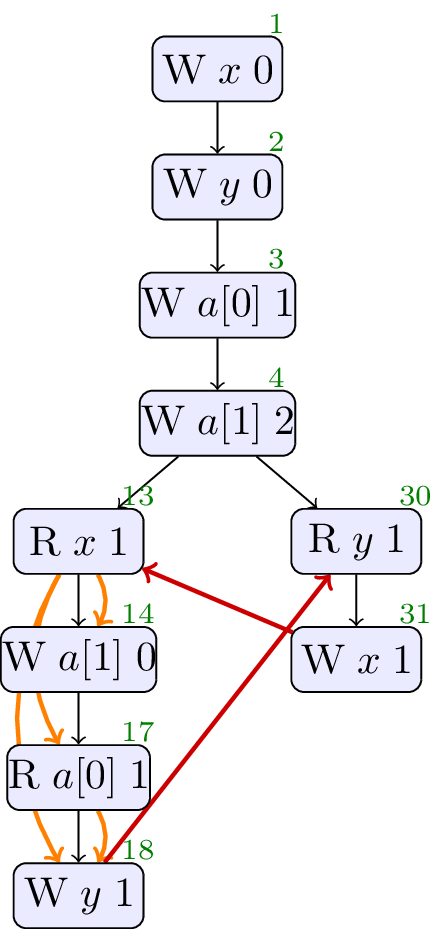
Forbidden, cycle in sdep ∪ rf. No values from thin air.
4.13. JCTC13
// Init: x : = 0 ; y : = 0 ; // Thread 0: r1 : = x ; if ( r1 == 1 ) { y : = 1 } // Thread 1: r2 : = y ; if ( r2 == 1 ) { x : = 1 }
Forbidden, cycle in sdep ∪ rf. No values from thin air.
4.14. JCTC14
We skip this as it involves loops.
4.15. JCTC15
We skip this as the test probes Java’s weak coherence-order guarantees, and is not relevant to C++.
4.16. JCTC16
We skip this as the test probes Java’s weak coherence-order guarantees, and is not relevant to C++.
4.17. JCTC17
We skip this as the test probes Java’s weak coherence-order guarantees, and is not relevant to C++.
4.18. JCTC18
See § 2.6 Java Causality Test Case 18.
4.19. JCTC19
We skip this as it probes thread joining, which is out-of-scope for this paper.
4.20. JCTC20
We skip this as it probes thread joining, which is out-of-scope for this paper.